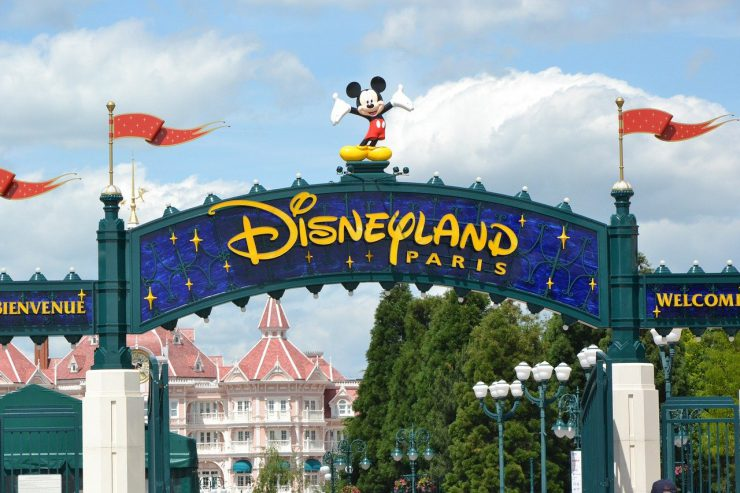
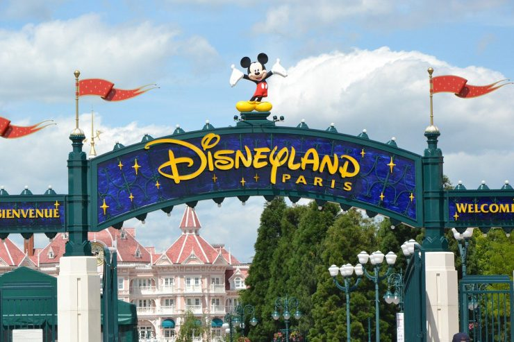

Torre Eiffel (Paris), Museu do Louvre (Paris), Coliseu (Roma), Sagrada Família (Barcelona), Catedral de Notre-Dame (Paris), Palácio de Versalhes (Paris), Basílica de São Pedro (Vaticano), Panteão (Roma), Sagrado Coração (Paris) e Disneyland Paris.
 
